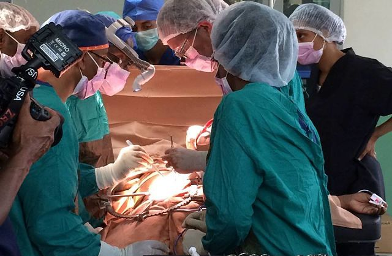
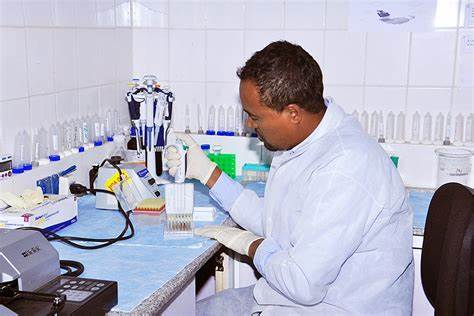

Emargecncy service

Emergency Room / Ambulance. Even seconds count on the thin line between life and
death in Tikur Anbesa Hospital’s experienced emergency room and ambulance staff are at
your service 24 hours a day. At the hospital call center, our ambulances are ready with
our teams consisting of “doctor, nurse and ambulance driver”.Black Lion Hospital is an
emergency hospital 24/7 to treat anyone seeking emergency medical care

Sergical Service
data from ethiopia indicates that the surgical workforce suffers from a very surgery related accidents.
| Year Of training |
Frequency |
Percentage |
1st |
13 |
36.1 |
| 2nd |
6 |
16.7 |
| 3rd |
9 |
25 |
| 4th |
8 |
22.2 |

Laboratory Service
For your doctor to make the right diagnosis, they need as much information as possible.
That is where our pathology and lab teams come in to deliver fast and accurate results. We operate 24/7 so your
doctor can complete your diagnosis and treatment as quickly as possible.
 https://www.ethiovisit.com/directory/black-lion-hospital/1263
https://www.ethiovisit.com/directory/black-lion-hospital/1263
 (+251) 11-551-1211
(+251) 11-551-1211
 (+251911209834
(+251911209834